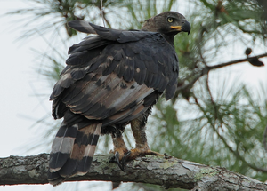

Detalles Del Águila Coronada
| Habitat | Estas aves pueden habitar en una variedad de áreas boscosas, incluidos bosques tropicales y subtropicales, así como en sabanas arboladas y zonas montañosas con vegetación densa. |
| Ubicación Geográfica | Se encuentra principalmente en África subsahariana. Su distribución abarca varios países de la región, incluyendo Kenia, Tanzania, Mozambique, Zambia, Zimbabwe, así como partes de Uganda y Malawi. |
| Hábitos Alimenticios | Es un depredador carnívoro, por lo tanto, se alimenta de una variedad de presas, incluyendo mamíferos como monos y antílopes, aves pequeñas, reptiles y ocasionalmente insectos y carroña. |
| Hábitos Reproductivos | Prefiere anidar en árboles altos, donde la hembra pone uno o dos huevos durante la temporada de cría, incubados tanto por ella como por el macho durante aproximadamente 45 a 50 días. Ambos padres participan activamente en la crianza de los polluelos, alimentándolos en el nido hasta que son lo suficientemente independientes para dejar el nido, lo que ocurre alrededor de los 4 a 5 meses de edad |
| Estado de Conservación | No está actualmente en peligro de extinción, pero enfrenta amenazas como la pérdida de hábitat y la caza furtiva |